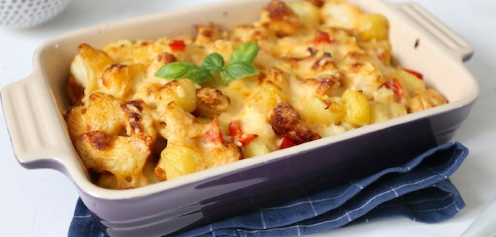

Welcome to
Ons Kookboek - Lekkere en makkelijke recepten die ieder kan maken
2021.03.30 15:54Skip to main content Skip to primary sidebar Skip to footer
Ons Kookboek
A-Z-Index GEBAK Vlees Makkelijk SOEPFeatured
7 Broodpudding Recepten: 7 redenen om nooit nog oud brood weg te gooien!
Featured
Lekkere speculaas maken à la Jeroen Meus
Featured
Hier is je Lekkerste Stoofvlees op grootmoeders wijze
Featured
7 Keilekkere Konijn Recepten! Klaarmaken met pruimen, op grootmoeders wijze of à la Jeroen Meus
Alfabetische Index
Alfabetische Recepten Index van A tot Z
Alle recepten van Ons Kookboek kan je nu makkelijk vinden in deze alfabetische index van A tot Z, dus sneller gevonden is sneller genieten!
Read More
Allernieuwste Recepten
Kerstrecepten
5x Wonderlijke Worstenbroodjes maken met bladerdeeg: Jeroen Meus, Jamie Oliver, Piet Huysentruyt
Kies uit deze 5 recepten om zelf je beste worstenbroodjes te maken! Met bladerdeeg à la Jeroen Meus, in 30 minuten door Jamie Oliver of: maak zelf bladerdeeg
Lees Verder...
Kerstrecepten
Je Snelste Eierpunch recept: Nu maken = Nu drinken!
Makkelijk recept om snel warme eierpunch te maken zodat je direct na het koken al kan genieten van een lekker advocaat drankje, ideaal tijdens koude sneeuw of kerstdagen.
Lees Verder...
Kerstrecepten
Warme winterse Gluhwein maken doe je snel zo!
Makkelijk recept om lekkere gluhwein te maken zodat je niet naar een Duitse kerstmarkt moet en toch in 30 minuten kan genieten van een heerlijk hartverwarmend warm wijntje.
Lees Verder...
Vlees Gerechten
Stoofvlees van Jeroen Meus met smaken die je nog nooit geproefd zal hebben
Kies 1 van deze 17 bieren om het lekkerste stoofvlees van Jeroen Meus te maken. Met Vlaamse ingrediënten die je waarschijnlijk nog niet kent, zodat je klassiek Vlaams stoofvlees zal serveren, liefst met frieten.
Lees Verder...
Lekkere Soep Recepten om Vandaag te Maken!
Ultieme Uiensoep met Bier Altijd een Topper!
Hou jij van soep én bier? Ga dan deze makkelijke uiensoep maken! Heerlijk verwarmend op een koude dag: met verrasende smaken, die jij nog nooit geproefd had
Lees Verder...
2x Spinaziesoep Altijd een verrassend groen soepje!
2 recepten om lekkere spinaziesoep te maken met verse spinazie of met spinazie uit de diepvries. Beoordeling: lekkere soep, smaakt fris met die citroen erin!
Lees Verder...
3x SOEPER MAKKELIJKE courgettesoep recepten: klaar in 30 minuten
Kies uw favoriete, super makkelijk courgettesoep recept uit Libelle, Njam of onze keuken. Voor een snel, klein potje soep op een regenachtige dag in 30 minuten.
Lees Verder...
7 ingrediënten pastinaaksoep met curry maak jij ze nog makkelijker?
Geniet van deze makkelijke pastinaaksoep met curry die je zal verwarmen op een natte, koude winterdag. + 7 tips om deze soep nog lekkerder te maken: welke kies jij?
Lees Verder...
3 stappen Rode Bietensoep à la Sofie Dumont makkelijk zat!
Wist je dat je zonder extra moeite: makkelijk rode bietensoep kan maken? Lekkere rode bieten koken is makkelijker dan het lijkt. Deze soep is het bewijs!
Lees Verder...
Hemels Lekkere Balletjes in tomatensaus van Peter Goossens
Feestelijk 3 sterren recept voor balletjes in tomatensaus met 27 lekkere ingrediënten van Peter Goossens uit De Beste Hobbykok van Vlaanderen.
Lees Verder...
5x lekkere pastinaaksoep van Jeroen Meus, Piet Huysentruyt, Sandra Bekkari of: ongelooflijk oosters
Kies uit deze 5 lekkere pastinaaksoep recepten. 1: klassiek met appel volgens Jeroen Meus. 2: verrassende volgens Piet Huysentruyt. 3 + 4: nieuwe Bonus recepten van Sandra Bekkari, Of 5: lekker oosters genieten van een warme kom roomsoep.
Lees Verder...
Primary Sidebar
Recepten Zoeken
7 Allernieuwste Recepten
3x Irish Coffee: Verrassend van Jeroen Meus Klassiek met Kick van SOS Piet 5x Wonderlijke Worstenbroodjes maken met bladerdeeg: Jeroen Meus, Jamie Oliver, Piet Huysentruyt Je Snelste Eierpunch recept: Nu maken = Nu drinken! Warme winterse Gluhwein maken doe je snel zo! 7 Keilekkere Konijn Recepten! Klaarmaken met pruimen, op grootmoeders wijze of à la Jeroen Meus Lekkere speculaas maken à la Jeroen Meus Stoofvlees van Jeroen Meus met smaken die je nog nooit geproefd zal hebbenDe Beste Recepten Van OnsKooboek.be
Footer
Allerhande recepten Allernieuwste recepten Kerstrecepten Pasta recepten Salade Smoothie Recepten Winterrecepten Broccoli Chocolade Recepten Gezond Jamie Oliver Kip Koekjes Lente Recepten Mosselen Eenvoudige Desserts Oosterse recepten Sinterklaas Recepten Download ons Gratis Paleo Recepten Kookboek 120 Recepten voor Beginners PrivacybeleidCopyright © 2021 https://www.onskookboek.be
